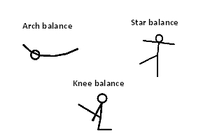
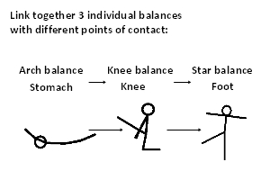
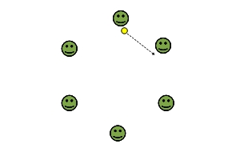

|
Literacy Keywords
|
Hands, Feet, Back, Jogging, Balance, Individual, Jump |
Citizenship
|
Develop self confidence, Develop own experiences and ideas |
Numeracy
|
Counting |
|
Risk Assessment
|
- Suitable clothing and footwear worn by participants
- Equipment suitable for participants
- Safety information highlighted to participants
- Equipment safe and checked
- Area safe and checked - any hazards removed
|
ICT
|
|
Equipment
|
Marker cones, Marker spots, Floor mats, Beanbags, Balls
|
| Warm Up | Traffic Lights | Strand : KUFH | Duration : 5 - 10 | Teaching Points |
- The children should travel around the area reacting to the following signals as they are called out by the teachers:
- Red = Stop freeze where you are
- Amber = Get ready and jump/jog on the spot
- Green = Go and travel around the area. Keep varying the way the children travel
| - Head up to look where you are going
- Take care not to bump into anyone
- Vary the way of travelling e.g. hopping, skipping, jumping
|
| Analysis | Know when their body is active and talk about the difference between tension and relaxation - KUFH Level 1 |
- Ask the children to sit or lay comfortably, and ask them to try and make each part of their body go floppy
- Ask them to feel their muscles as they are doing this
- Emphasise the words relax, relaxed, relaxation. Explain that when their muscles feel like this it is relaxed
- How do your muscles feel when they are relaxed?
- Soft and wobbly
- Now ask the children to tense their muscles and feel the difference. Start with the example of the forearm - this can be tensed by making a fist with the hand and squeezing it tight
- How does the forearm feel?
- Tight and hard. Explain to the children that this muscle is now tensed
- Ask the children to tense different muscles in their body
- How is a tensed muscle different from a relaxed one?
- A tensed muscle is hard and firm a relaxed muscle is soft and wobbly
|
| Coordination and Movement | Spot Balance | Strand : AD | Duration : 5 - 10 | Teaching Points |
- Each child requires a marker spot and a space to work in
- Ask the children to perform different actions on the spot
- Examples of actions are:
- Balance on the spot - stand on 1 foot
- March on the spot
- Jog on the spot
- Jump on the spot
- Sprint on the spot
- Balance in different ways - bend and stretch the body in different directions
- Keep varying the actions and balances the children have to perform on the marker spot
| - Keep balanced to stay on the marker spot
- Perform the balances/actions to the best of your ability
- The feet must be kept on the marker spot
|
| Progression | Teaching Points |
- Ask the children to suggest ideas for actions or balances they can perform on the spot
- Allow the children a couple of minutes to experiment and try out some ideas
- Ask some of the children to show their ideas to the rest of the class and the other children to copy them
| - The feet must be kept on the marker spot
- The children must think of and perform actions that are safe
- Perform the balances/actions to the best of your ability
- Keep balanced to stay on the marker spot
|
| To make activity harder |
- Use a smaller marker spot
|
| To make activity easier |
|
| Skill Development | Individual balances - diagram | Strand : AD | Duration : 5 - 10 | Teaching Points |
- Spread mats around the area - ensure they are safely spaced
- Ask the children to find a space on a mat to work on their own, ideally one or two children per mat
- Teach the children the following individual balances - See notes below about each of the balances and relevant diagrams:
- Star balance:
- Standing up with feet apart
- Place arms straight out to the side of the body.
- Imagine legs and arms being pulled apart to create the shape of a star.
- Lift one leg off the floor and lean slightly to the opposite side
- Hold the balance for three seconds and bring foot back to floor.
- Repeat on the opposite leg
- Lying on front of the body in a straight shape
- Keep arms and legs straight
- Lift head, arms and legs off the floor keeping legs and feet together leaving just the stomach in contact with the floor - Only lift arms and legs slightly off the floor to ensure the child is not over bending their back too much
- Knee Balance:
- Starting off kneeling up on one knee with the other leg placed straight out in front of the body
- Place arms straight out at the side of the body
- Slowly lift the leg in front of the body to hip height, keeping it straight
- Hold for three seconds and bring back down
- Repeat on the opposite leg
| - Encourage the children to hold the balances and keep the body tight
- Encourage the children to perform the shape to the best of their ability
- Ensure adequate amount of space between each mat and each individual
- Ensure the children use the correct technique
|
| Progression | Teaching Points |
- Ask the children to create an individual balance with certain body parts as points of contact
- Keep varying the body parts used as the point(s) of contact
| - Give the children more than one body part e.g. 1 hand and 1 foot
- Encourage the children to explore balancing on different body parts
|
| To make activity harder |
- Use alternative to feet as main point of contact
|
| To make activity easier |
- Balance on named body parts
|
| Sequence | Link Together Balances - Individual - diagram | Strand : AD | Duration : 10 - 15 | Teaching Points |
- Working on their own ask the children to create a sequence linking together balances they have learnt in the lesson (or in previous lessons)
- The sequence should include:
- Linking together 3 individual balances with different points of contact - hands, feet and back
| - Ensure correct technique is used for the balances
- Ensure the child is stable before balancing
- Ensure the child is stable before balancing on the point of contact required
- Ensure the children have practiced the basic individual balances first before trying to link them together
- Keep eyes and head looking forwards
- Number of balances in the sequence can be increased depending on children's progress
|
| Progression | Teaching Points |
- Once the children have developed a routine ask some of the children to perform theirs for the rest of the class
| - This can be performed at the end of the lesson
- Encourage the audience to give feedback - What did they like about the performance?
|
| To make activity harder |
- Increase the number of balances to be linked
|
| To make activity easier |
- Reduce the number of balances to be linked
|
| Plenary | | What is a balance? | - A balance is a stationary position where the body is held still - frozen
| | What different body parts can you balance on? | - Any part of the body can be used to balance on e.g. Hands, feet, knees, stomach, back, shoulders
|
|
Evaluation
|
How did the children get on with the activities today?
- Most were successful and displayed a good understanding when questioned – Move on to the next theme in the unit
- Most struggled and were not successful at the activities – Recover this theme next week, perhaps with the focus at a lower level
|
| Individual balances |
Link Together Balances - Individual |
Circle Stretch Sitting |
|  |
 |
 |
|
|
|
|
|
|
|